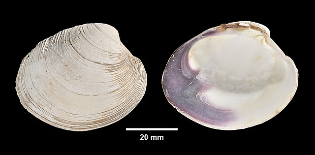

3 Looking closer at data objects in R
Data are individual pieces of information, while datasets are a way of structuring and organizing data related to a body of work. R stores both data and datasets as different kinds of objects. This section discusses a number of the commonly-encountered object types in R. Try out the examples, but don’t worry if it doesn’t all stick right away. If you run into a problem with object types, it’s helpful just to know that different types of objects exist.
Atomic vectors
Atomic vectors are the primary way that R stores data. These can be used in expressions and functions, or combined into compound class objects (see below). An atomic vector with a single value is sometimes called a scalar.
The main rule with vectors is that they are comprised of a single type of data. You can determine what type of data a vector contains using the typeof function. There are a few of these, but by far the most common are numeric, logical, and character vectors.
Numeric
As shown above, R can interpret numbers in the same way a calculator does. There are two categories of numeric vectors: integer and double. An integer is stored as a whole number, while a double number can be any number, but includes storage space for decimal values1. Some mathematical terms that count as numerical objects are either built into R, such as using pi for ùúã, or require some minor coding, like exp(1) for e. Below you can see some examples and how R interprets them.
| Command line | R value |
|---|---|
| 42 | 42 |
| 867.5309 | 867.5309 |
| pi | 3.141593 |
| exp(1) | 2.718282 |
| sqrt(4) | 2 |
An important thing to keep in mind here is that R treats all numbers as double type by default, and for this course we’ll be using numbers stored as double type pretty much exclusively. There are computational reasons why you might want to store values as integers (conserving space, converting to another coding language that requires integers, etc.), but these are rare for most data analysis and visualization activities.
Logical
A logical (or Boolean) vector in R has values of either TRUE or FALSE, or shortened to T and F, and these are always expressed in capital letters. Some operations in R will return values as either TRUE or FALSE, while some functions may require input in the form of a logical value. Here are some examples:
2 == 2
[1] TRUE
2 == 3
[1] FALSE
s<-2==3
typeof(s)
[1] "logical"
One thing to note here is that, when determining equivalence, a double equals sign (==) is used. This is because a single equals sign (=) is another way of assigning a values to variables.
Character
A character vector (also referred to as a string) is text that is meant to be read as text. R cannot interpret the meaning of the text directly, but some functions require character vectors for input. Elements in a character vector are surrounded by quote marks (")2.
text<-"text"
typeof(text)
[1] "character"
Double, logical, or character: what type of data would the following produce? Make your best guess for each item, and then use the typeof function to check your answers:
2+2
(2+2)==4
T
typeof(42)
“false”
Using vectors to store data
For work in data analysis and visualization, these different kinds of objects are used to store different kinds of information. For example, if we were conducting a study of recreational shellfish harvesting at Cape Cod beaches, character vectors might be used to record the names of the shellfish species, while numerical vectors could be used for things like species counts.
A vector is a collection of objects of a single type, presented as an ordered row. Each object in a vector has a value as well as a position. Vectors can be created by entering the objects, separated by commas, into a parentheses with a c at the front (e.g., c()). Here, we’ll create two vectors for counts of two different kinds of clams:
.jpeg)

Let’s say we’ve done counts for these two shellfish types at 9 different sites. First, a vector of 9 counts for the soft-shelled clams:
Mya<-c(45,38,75,62,19,62,60,89,26)
Then another 9 counts for the quahogs:
Mercenaria<-c(65,56,58,57,34,89,65,61,91)
These data are purely fictional, but we can use them to show some key aspects of working with vector data. Individual objects or groups of objects in a vector can be accessed by entering the name of the vector with their position number into a set of square brackets ([]).
Mya[5]
[1] 19
For multiple objects, the individual positions can be entered followed by commas, or a run of values can be expressed using the first and last positions separated by a colon (:) .
Mercenaria[1:3]
[1] 65 56 58
And, as was the case for vectors of single values, the type of vector is determined by the kinds of atomic objects it contains:
typeof(Mercenaria)
[1] "double"
There are lots of different ways you might create a vector. For example, you can create vectors using a function like we did with the rep function above. You can also combine multiple existing vectors within a single vector. Here, we will create a vector with 9 instances of each genus name:
genus<-c(rep("Mya",9),rep("Mercenaria",9))
Now, we can take a look:
genus
[1] "Mya" "Mya" "Mya" "Mya" "Mya"
[6] "Mya" "Mya" "Mya" "Mya" "Mercenaria"
[11] "Mercenaria" "Mercenaria" "Mercenaria" "Mercenaria" "Mercenaria"
[16] "Mercenaria" "Mercenaria" "Mercenaria"
Remember that each number at left is indicating the position of the value that starts that line. Finally, we can look at what kind of
typeof(genus)
[1] "character"
We can also create a vector of the count data, called count, by combining the two vectors of count data:
count<-c(Mya,Mercenaria)
And when we ask R to return this value:
count
[1] 60 61 55 62 59 62 60 59 56 65 56 58 57 64 59 65 61 58
However, it will be a rare instance where you would do data entry directly into R. Most of the time, we will read data in from a file. If you look at the File tab in the Output pane, you should see a file called shellLengths.txt containing the average shell lengths in inches at each site. If you click on this, you should see this come up in a tab in Source pane:

An important thing to keep in mind here is that even though you can see them here, R needs instructions to read them. You can read these numbers into R as a vector called meanLength using the scan function:
meanLength<-scan("shellLengths.txt")
Now, if we ask R for the meanLength variable…
meanLength
…it gives us back the following:
[1] 3.4 2.7 3.6 3.3 2.3 3.5 3.6 3.9 2.4 3.5 3.4 3.5 3.6 3.7 3.3 3.4 3.5 3.6
Reading and writing from files is an important aspect of working with data and is something we’ll cover in more depth next week. But for now just keep in mind that R is capable of putting together data in lots of different ways.
Class objects
In R, datasets are stored as class objects. These can be made up of multiple atomic vectors and, sometimes, multiple class objects. For our purposes, the most commonly used class object will be the dataframe:
Dataframes
A dataframe is a table of data, where each column contains data belonging to a single type (e.g., numeric, character, logical). If you’ve ever used a spreadsheet, the data in a dataframe is organized similarly with columns and rows. Many data operations in R make use of dataframes to organize data. You can create a dataframe from a set of vectors using the data.frame function:
shellfish<-data.frame(genus,count,meanLength)
Here, we’ve created a dataframe called shellfish, and it is comprised of three vectors. We can look at it by entering its name into the command prompt:
shellfish
And the output looks like this:
genus count meanLength
1 Mya 45 3.4
2 Mya 38 2.7
3 Mya 75 3.6
4 Mya 62 3.3
5 Mya 19 2.3
6 Mya 62 3.5
7 Mya 60 3.6
8 Mya 89 3.9
9 Mya 26 2.4
10 Mercenaria 65 3.5
11 Mercenaria 56 3.4
12 Mercenaria 58 3.5
13 Mercenaria 57 3.6
14 Mercenaria 34 3.7
15 Mercenaria 89 3.3
16 Mercenaria 65 3.4
17 Mercenaria 61 3.5
18 Mercenaria 91 3.6
Here you can see the dataframe has three columns: genus, count, and meanLength, each corresponding to the vectors we used to create it. You can see the column names at the top of the dataframe, and on the left you can see row numbers. You can access the rows and columns by using square brackets ([]), similarly to how you would with a vector. To get a single value, you can
You can also access named columns by using the dollar sign ($) immediately following the name of the dataframe. For example, entering the following…
shellfish$count
…will return the values from the count column:
[1] 45 38 75 62 19 62 60 89 26 65 56 58 57 34 89 65 61 91
Other class objects
By far, vectors and dataframes are the most common class objects we will deal with in this class. There are other class data objects that are important for working in R, and many functions and packages will have their own object types that combine multiple In particular
Lists
Matrices
Arrays
We’ll cover these later in the course, but for now just keep in mind that these exist and you might see these referenced in R help documentation from time to time. There are also objects that are unique to functions and packages. For example, the hist function returns a histogram class object. These are usually composites of some the objects we’ve discussed already (e.g., a list of vectors). We will talk about a couple of these later on and how to break down their structures into simpler parts.
We’ll be using dataframes almost exclusively for the first few weeks to store structured datasets. Eventually, we will also look at another table structure called a tibble, which is frequently used in the tidyverse set of packages. Stay tuned!
The term double refers to “double precision floating point.”↩︎
R will treat double (“) and single (’) quote marks in the same way. However, the convention is to use double quotes to mark the beginning and end of a string of characters, and to reserve single quotes for instances where the string itself contains quote marks. For example:
text<-"Character objects are sometimes referred to as 'string' objects."↩︎